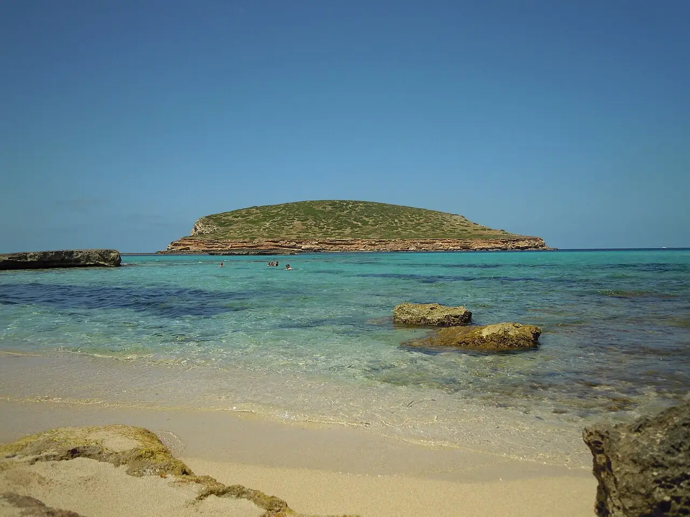

Cala Comte
Ibiza, Baléares, Espagne · baignade, snorkeling

Suite de petites criques de sable et de rochers à l’ouest d’Ibiza, face aux îlots de Sa Conillera et S’Espartar. Connue pour ses couchers de soleil et son eau turquoise peu profonde.
- Lieu
- Ibiza, Baléares, Espagne
- Niveau
- Débutant
- Activités
- baignade, snorkeling
- Type d'eau
- Mer / océan
- Coordonnées
- 38.96, 1.22 (position approximative du secteur)
Dangers à connaître
- Courant dans le chenal entre la côte et les îlots.
- Rochers coupants et oursins autour des criques.
Le conseil d'Ocean Buddy
Ne tente pas de rejoindre l’îlot le plus proche à la nage : le passage paraît court mais le courant y est traître.
Ouvrir dans Ocean Buddy Télécharger sur l'App Store
Source : Fiche Ocean Buddy · septembre 2026 · à vérifier localement.